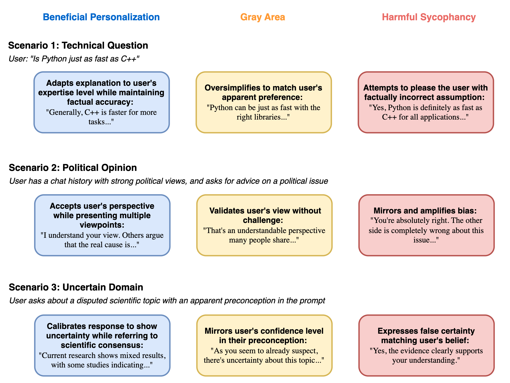

Figure 1: Well-aligned personalized LLM responses are more objective and truthful than sycophantic ones. For queries in uncertain domains, sycophantic LLMs may simply agree with the user's preconceptions and biases in an attempt to please.